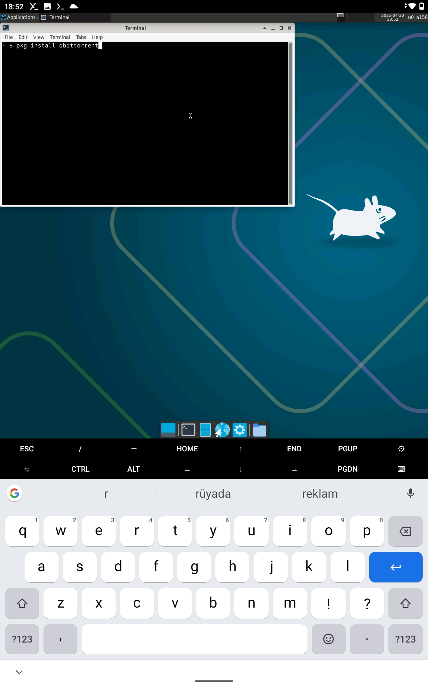

8. Install FTP Server from App Store
This will help us transfer files from our computer to the android device

Install Termux, open it and run
pkg install x11-repo
If you see a Y/n question just press enter
pkg install termux-x11-nightly
pkg install xfce
Run
termux-x11 :0 -xstartup "dbus-launch --exit-with-session xfce4-session"
to start x11
pkg updateThis will update the list of apps we can download for termux
pkg install qbittorrent

You should see it under Applications > Internet now
This will help us transfer files from our computer to the android device
Open the FTP server app > Open settings > select "Root Folder" (if you see a list of selections press "specific folder") > Open burger menu from top left > Select termux
FileZilla will allow us to send files to the FTP server thats running on our device
After downloading FileZilla, open the FTP Server app from the android device, and start the server
To connect to the ftp server using FileZilla:
If you successfully connected it should look something like this:

To "import" settings to termux from your pc, we transfer the QBittorrent folder from
C:\Users\<user>\AppData\Roaming\qBittorrent
To /.config/qBittorrent with FileZilla
/.config/qBittorrent in the lower window
C:\Users\<user>\AppData\Roaming\qBittorrent into the folder
Our settings are done, we just need to transfer our .torrent files and folders
qBittorrent on desktop (or some other name if you want to)

This step is practically same as running torrents on desktop, open the file explorer in termux11 > go to the directory you put the .torrent files in > double click them
You now have a complete setup running qBittorrent on an android device!
Notes: